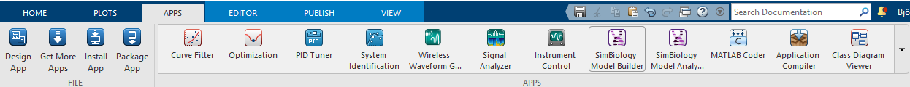

Matlab - extra reading and links¶
Documentation¶
- Documentation at the HPC centres UPPMAX, HPC2N, LUNARC, NSC, and PDC
- UPPMAX
- HPC2N: Matlab and Parallel Matlab
- LUNARC
- NSC: general instructions and installations on Tetralith specifically
- PDC
- Official MATLAB documentation
Courses - improving your programming skills¶
If you have a Mathworks account that is less than 2 years old, Mathworks offers free MATLAB self-paced online training courses. Students at any academic institution with a campus-wide license can use their university email addresses to create a free account to access these resources.
The Mondays with MATLAB lecture series is offered every September, and offers introductions to MATLAB, its Parallel Computing Toolbox, and AI/ML toolboxes. These and other events are posted at Mathworks events. If you have an account, you will be automatically signed up for the Mathworks mailing list, which will notify you of upcoming webinars as well as some featured packages. The webinars cover a broad range of topics and disciplines at varying skill levels, although these seminars tend to be more advanced.
Debugging¶
If a serial job produces an error, call the getDebugLog method to view the error log file. When submitting an independent job, specify the task.
For Pool jobs, only specify the job object.
When troubleshooting a job, the cluster admin may request the scheduler ID of the job. This can be derived by calling getTaskSchedulerIDs (call schedID(job) before R2019b).
Parallel computing¶
To learn more about the MATLAB Parallel Computing Toolbox, check out these resources:
- Parallel Computing Coding Examples
- Parallel Computing Documentation
- Parallel Computing Overview
- Parallel Computing Tutorials
- Parallel Computing Videos
- Parallel Computing Webinars
Interaction with other tools¶
Coming?
Add-ons¶
Some toolboxes
- Matlab products
- Parallel Computing Toolbox
- MATLAB Parallel Server
- Deep Learning Toolbox
- Statistics and Machine Learning Toolbox
- Simulink
- Stateflow
- SimEvents
- Simscape
Some toolboxes provides GUI for their tools Apps
- Matlab products
- Deep Network Designer - Design and visualize deep learning networks Deep Network Designer
- Curve Fitter - Fit curves and surfaces to data
- Deep Learning Toolbox
- Statistics and Machine Learning Toolbox
- Simulink
- Stateflow
- SimEvents
- Simscape
